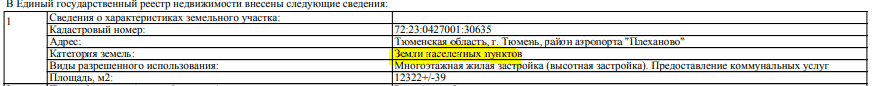
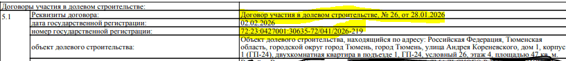
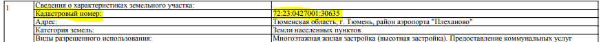
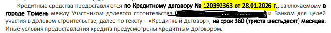

1 Найти услугу и начать заявление Выбрать: «Распоряжение средствами МСК»
Зайдите на Госуслуги под своей учётной записью. В строке поиска введите «Распоряжение средствами МСК», откройте услугу из результатов и нажмите «Начать».
Как правило, это мама ребёнка. Заявление оформляется с её учётной записи — с чужой подать не получится.
2 Если сертификат не нашёлся Нажать: «Найти в СФР» или «Продолжить»
Бывает, что Госуслуги пишут: «Ваш сертификат на маткапитал не найден». Это не отказ — просто сведения не подгрузились из Социального фонда.
Нажмите «Найти в СФР», чтобы система запросила данные, либо «Продолжить» — и заполняйте заявление дальше.
3 Возраст ребёнка Выбрать: «Меньше 3 лет» или «3 года или больше»
Госуслуги спросят, сколько лет ребёнку, на которого оформлен маткапитал. От ответа зависит, какие цели расходования покажут дальше.
Часть целей доступна только после трёхлетия ребёнка. Первоначальный взнос по ипотеке — исключение: на него маткапитал можно направить сразу.
4 Направление расходования Выбрать: «На жильё»
Из списка направлений выберите «На жильё».
5 Что делаете с жильём Выбрать: «Приобретение жилья»
Следующий экран уточняет, что именно вы делаете с жильём. Покупка квартиры у застройщика по договору долевого участия — это «Приобретение жилья».
6 Как оплачиваете квартиру Выбрать: «В кредит через банк»
Квартира берётся в ипотеку, поэтому выбирайте «В кредит через банк».
7 На что пойдут деньги Выбрать: «Первоначальный взнос при получении кредита»
Маткапитал можно направить либо на первоначальный взнос, либо на погашение уже взятого кредита. В нашем случае — «Первоначальный взнос при получении кредита».
Загляните в пункт 3.3 своего договора долевого участия: там написано, за счёт чего вносится оплата. Если упомянут материнский капитал в счёт первоначального взноса — вам сюда.
8 Кто получит деньги по договору Выбрать: «Гражданин»
Вопрос сбивает с толку: кажется, что деньги идут застройщику, то есть организации. Но при покупке по ДДУ маткапитал перечисляется на эскроу-счёт, открытый на имя человека. Поэтому — «Гражданин».
9 На кого оформлен договор Выбрать: «На меня» или «На моего супруга»
Ответ зависит от того, кто указан участником долевого строительства в вашем ДДУ:
- в договоре только вы или вы вместе с супругом — «На меня»;
- в договоре только супруг — «На моего супруга».
10 Перейти к заявлению Нажать: «Перейти к заявлению»
Госуслуги подтвердят, что услуга вам подходит, и предложат заполнить заявление. Нажмите «Перейти к заявлению» — дальше начнётся сама анкета.
11 Какое жильё покупаете Выбрать: «В строящемся доме»
Дом ещё не сдан, ключей нет — значит, «В строящемся доме».
12 Данные о земельном участке Понадобится: выписка ЕГРН, раздел 1
Теперь анкета спрашивает про участок, на котором строится дом. В поле «Категория земель» почти всегда — «Земли населённых пунктов». Точное значение есть в выписке ЕГРН, в первом разделе.
Она показана только как образец, чтобы было понятно, где искать строку. Значения берите из своей.

13 Документ на квартиру Выбрать: «Договор участия в долевом строительстве»
В поле «Документ, подтверждающий право на объект» выберите «Договор участия в долевом строительстве».
14 Реквизиты договора долевого участия Понадобится: выписка ЕГРН, разделы 1 и 5
Здесь четыре поля: номер договора, дата выдачи, номер государственной регистрации и кадастровый номер. Всё это есть в выписке ЕГРН:
- номер и дата ДДУ, дата и номер госрегистрации — раздел 5.1;
- кадастровый номер участка — раздел 1.


15 Адрес земельного участка Понадобится: выписка ЕГРН
Укажите адрес участка — он есть в выписке ЕГРН: в разделе 5 указан адрес объекта долевого строительства, в разделе 1 — адрес самого участка.
Система иногда не распознаёт улицу или номер участка. Тогда укажите только город — этого достаточно.
16 Реквизиты кредитного договора Понадобится: кредитный договор или ДДУ, пункт 3.3
Нужны номер кредитного договора и дата его заключения. Они написаны в самом кредитном договоре, а если его нет под рукой — в пункте 3.3 вашего ДДУ.

17 Данные банка Понадобится: БИК и ИНН банка из кредитного договора
Укажите банк, который выдал ипотеку. БИК и ИНН есть в кредитном договоре — обычно в разделе с реквизитами сторон, на последних страницах.
18 Владелец эскроу-счёта Понадобится: фамилия, имя и отчество владельца счёта
Впишите данные человека, на которого открыт эскроу-счёт. Отчество — если оно есть.
Тот, кто указан в договоре эскроу, — как правило, основной покупатель по ДДУ.
19 Реквизиты эскроу-счёта Понадобится: номер счёта, БИК и корсчёт банка
Заполните реквизиты счёта, на который уйдут деньги. Где их взять:
- ДОМ.РФ — реквизиты юристы направляли вам ранее на электронную почту.
- Сбербанк, Альфа-Банк, Газпромбанк — реквизиты видны в мобильном приложении банка.
20 Сумма из материнского капитала Понадобится: ДДУ, пункт 3.3
Укажите сумму, которой распоряжаетесь. Средства перечислят одним платежом.
В пункте 3.3 ДДУ написано, какая именно сумма маткапитала идёт в оплату — вплоть до копеек. Вписывайте её ровно так же. Расхождение хотя бы на копейку — повод для отказа.
21 Отправить заявление Нажать: «Отправить заявление»
Пролистайте заявление сверху вниз, проверьте данные и нажмите «Отправить заявление».
22 Дождаться решения Ждать: уведомление в личном кабинете Госуслуг
Решение придёт в личный кабинет Госуслуг. Пока заявление рассматривают, с вами может связаться сотрудник Социального фонда и уточнить детали — это обычная практика, пугаться не нужно.